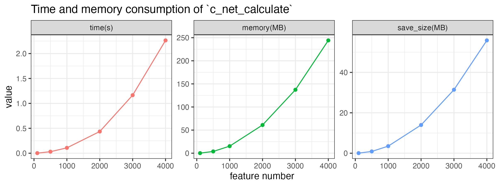
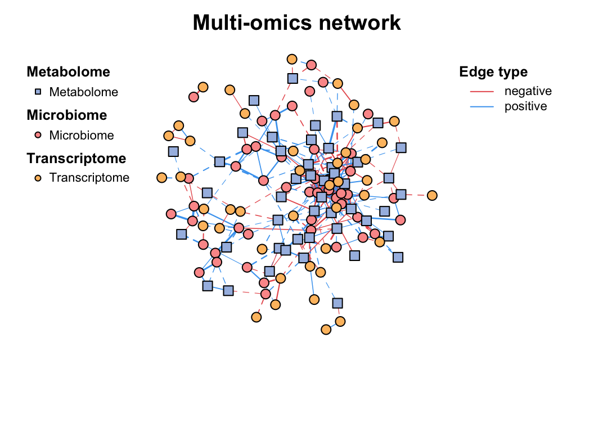

| Method | Description |
|---|---|
| cpm | Counts per million |
| minmax | linear transfer to (min, max) |
| acpm | Counts per million, then asinh transfer |
| log1 | $log(n+1)$ transformat |
| total | divide by total |
| max | divide by maximum |
| frequency | divide by total and multiply by the number of non-zero items, so that the average of non-zero entries is one. |
| normalize | make margin sum of squares equal to one |
| range | standardize values into range (0,1) (same to minmax(0,1)). If all values are constant, they will be transformed to 0. |
| rank | rank replaces abundance values by their increasing ranks leaving zeros unchanged. |
| rrank | rrank is similar but uses relative ranks with maximum 1. |
| pa | scale x to presence/absence scale (0/1). |
| standardize | scale x to zero mean and unit variance. |
| hellinger | square root of method = "total" |
| log | logarithmic transformation as suggested by Anderson et al. (2006): $log_b(x)+1$ for x>0, where b is the base of the logarithm; zeros are left as zeros. |
| alr | Additive log ratio ('alr') transformation (Aitchison 1986) reduces data skewness and compositionality bias. |
| clr | centered log ratio ('clr') transformation proposed by Aitchison (1986) reduces data skewness and compositionality bias. |
| rclr | robust clr ('rclr') is similar to regular clr (see above) but allows data that contains zeroes. |
2 Construction
2.1 Pre-processing
The trans() function contains many normalization methods, suitable for pre-processing of different omics, some refer to vegan::decostand().
trans(otutab, method = "log1") %>% head()| NS1 | NS2 | NS3 | NS4 | NS5 | NS6 | WS1 | WS2 | WS3 | WS4 | WS5 | WS6 | CS1 | CS2 | CS3 | CS4 | CS5 | CS6 | |
|---|---|---|---|---|---|---|---|---|---|---|---|---|---|---|---|---|---|---|
| s__un_f__Thermomonosporaceae | 6.996682 | 7.560601 | 6.698268 | 7.211557 | 6.970730 | 6.976348 | 7.133296 | 7.376508 | 7.193686 | 6.848005 | 7.118016 | 6.919684 | 7.746733 | 7.831617 | 7.444249 | 7.588830 | 7.266827 | 7.331715 |
| s__Pelomonas_puraquae | 7.582229 | 7.118826 | 7.767687 | 7.712891 | 7.973844 | 7.512071 | 6.469250 | 6.206576 | 7.115582 | 7.158514 | 6.860664 | 6.455199 | 7.174724 | 7.324490 | 6.739337 | 7.029088 | 7.302496 | 7.069023 |
| s__Rhizobacter_bergeniae | 6.378426 | 6.129050 | 6.791221 | 6.804614 | 7.112327 | 6.749931 | 6.405228 | 6.154858 | 6.976348 | 6.936343 | 6.741701 | 6.508769 | 6.937314 | 7.497207 | 6.910751 | 7.090910 | 7.085902 | 6.637258 |
| s__Flavobacterium_terrae | 5.501258 | 5.459586 | 7.501634 | 6.513230 | 7.276556 | 6.198479 | 5.765191 | 7.563720 | 7.309212 | 6.903747 | 6.359574 | 5.886104 | 6.985642 | 7.105786 | 6.626718 | 6.049734 | 6.940222 | 7.253470 |
| s__un_g__Rhizobacter | 7.267525 | 6.023448 | 6.280396 | 6.633318 | 7.162397 | 6.228511 | 6.222576 | 6.381816 | 6.100319 | 6.431331 | 6.489205 | 6.063785 | 7.032624 | 7.277939 | 6.311735 | 6.369901 | 7.008505 | 6.806829 |
| s__un_o__Burkholderiales | 6.787845 | 6.527958 | 6.715383 | 6.816736 | 7.315218 | 6.937314 | 5.463832 | 5.533390 | 5.886104 | 5.945421 | 5.961005 | 5.863631 | 6.313548 | 6.293419 | 6.169611 | 6.327937 | 6.242223 | 6.208590 |
rm_low(), guolv() and hebing() functions can help filter or aggregate the omics data.
2.2 Pairwise relationship
Pairwise relationship is the basis of network construction.
How to determine the pairwise relationship, because the experimental data is generally relatively rare, we mainly relying on statistical inference.
At present, there are mainly two statistical ways:
Similarity or correlation (1). For example: Spearman, Pearson, Bray-Curtis, etc. The similarity matrix between paired features can be calculated, and the randomized data can be used to repeatedly calculate the significance. Finally, meaningful similarities are retained in network.
Regression. Divide features into source and target, and use multiple regression to calculate the relationship between features.
Some tools use special methods to optimize the network construction, such as SparCC, etc.
Correlation
Correlation is a statistical term describing the degree to which two variables move in coordination with one-another.
Correlation calculation is the first step in all omics network analysis software, there are many method to get \(\rho\) and \(p\)-value. However, as the data size of omics grow larger and larger, some methods became very time and computational resource consuming.
Here, we provide the c_net_calculate() function for one single table or two tables to calculate correlation fastly (fig-2-packages-comparison), which will return a coor object including \(\rho\) and \(p\)-value.
# single table
t(otutab) -> totu
c_net_calculate(totu, method = "spearman") -> corr
corr
## Correlation table:
## Table dimensions: 485 rows, 485 columns
## Use method: spearman# two tables
metadata[, 3:10] -> env
c_net_calculate(totu, env, method = "spearman") -> corr2
corr2
## Correlation table:
## Table dimensions: 485 rows, 8 columns
## Use method: spearmanIf your input table is too large, the calculation may take a longer time, you can save the result and read it later.
According to the test, a table with 1,000 features will cost about 0.2s and to calculate the correlation, and the size of saved .corr file is about 6 MB.
Time, memory consumption, and saved file size approximately increase linearly with the square of the number of features, as shown in the following figure. By the way, these consumption increase a little bit with the number of samples.
Code
feature_number <- c(100, 500, 1000, 2000, 3000, 4000)
time <- c()
memory <- c()
save_size <- c()
for (i in feature_number) {
print(i)
matrix(rnorm(i * 50), ncol = i) -> tmp
system.time({
c_net_calculate(tmp, method = "spearman") -> tmp_corr
}) -> time1
time <- c(time, time1[3])
memory <- c(memory, object.size(tmp_corr))
save_corr(tmp_corr, "../tmp_corr.corr")
save_size <- c(save_size, file.size("../tmp_corr.corr"))
}
plot_data <- data.frame(
feature_number = feature_number,
`time(s)` = time, `memory(MB)` = memory / 1024 / 1024,
`save_size(MB)` = save_size / 1024 / 1024, check.names = F
)
plot_data <- melt(plot_data, id.vars = "feature_number")
ggplot(plot_data, aes(x = feature_number, y = value, color = variable)) +
geom_line() +
geom_point() +
facet_wrap(~variable, scales = "free") +
labs(
title = "Time and memory consumption of `c_net_calculate`",
x = "feature number", y = "value"
) +
theme_bw() +
theme(legend.position = "none")

c_net_calculate
The calculation speed of c_net_calculate is much faster than other R packages, especially when the number of features is large:
SparCC
SparCC fits the Dirichlet distribution to the observed data, and iteratively calculates the proportion and correlation of species several times. The resulting correlation is the median of the distribution. \(p\)-values were calculated using the bootstrap method.
This metric is said to be more useful with non-normal microbiome data.
\(D(x_i,x_j)=var(\log(\frac{x_i}{x_j}))\)
c_net_calculate(totu, method = "sparcc")
## NULL corr object.Distance
We should understand the dissimilarity indices (distance) for community. The vegan::vegdist() function provides a wide range of distance metrics based on abundance calculations (Table 2.2). Additionally, there are distance metrics that incorporate phylogenetic data such as “unifrac,” “beta_mpd,” “beta_mntd,” and “phylosor”, etc.
And the similarity indices are the inverse of the distance indices, often as \(1-distance\). We can also use c_net_calculate() to calculate the distance. The the similarity indices are more suitable for relationship between samples.
c_net_calculate(otutab, method = "bray") -> sim_df
sim_df
## Similarity (1-Distance) table:
## Table dimensions: 18 rows, 18 columns
## Use method: bray| Distance.Coefficient | Description |
|---|---|
| Manhattan | Manhattan distance calculates the sum of absolute differences between coordinates in each dimension. It is suitable for data with categorical variables or attributes. |
| Euclidean | Euclidean distance calculates the straight-line distance between two points in a multidimensional space. It is commonly used when data are continuous and have no categorical attributes. |
| Canberra | Canberra distance is a weighted version of Manhattan distance that emphasizes the importance of small differences between coordinates. It is often used for ecological data analysis. |
| Clark | Clark distance measures the proportion of non-zero attributes that are different between two samples. |
| Bray | Bray distance calculates the dissimilarity between two samples based on the sum of absolute differences in abundances. |
| Kulczynski | Kulczynski distance measures the similarity between two samples based on the arithmetic mean of proportions of common attributes. |
| Jaccard | Jaccard distance measures dissimilarity between two samples based on the proportion of unique attributes. It is commonly used in ecology for binary data. |
| Gower | Gower distance is a generalization of Manhattan distance for mixed data types, including categorical and continuous variables. |
| AltGower | AltGower distance is an alternative form of Gower distance that uses an alternative method to standardize continuous variables. |
| Morisita | Morisita distance measures dissimilarity between two samples based on the frequency of shared attributes, with emphasis on rare attributes. |
| Horn | Horn distance measures dissimilarity between two samples based on the geometric mean of proportions of shared attributes. |
| Mountford | Mountford distance measures dissimilarity between two samples based on the reciprocal of the arithmetic mean of proportions of shared attributes. |
| Raup | Raup distance measures dissimilarity between two samples based on the probability of shared attributes. |
| Binomial | Binomial distance measures dissimilarity between two samples based on the probability of observing shared attributes. |
| Chao | Chao distance is a modification of Jaccard distance that adjusts for undersampling of rare species. |
| Cao | Cao distance is a modification of Chao distance that incorporates species abundance information. |
| Mahalanobis | Mahalanobis distance measures the distance between two samples in multidimensional space, accounting for correlation between variables. |
| Chisq | Chisq distance calculates the dissimilarity between two samples based on the chi-squared distance between categorical variables. |
| Chord | Chord distance calculates dissimilarity between two samples based on the angles between points in multidimensional space. |
| Hellinger | Hellinger distance measures dissimilarity between two samples based on the square root of the sum of squared differences in square root-transformed abundances. |
| Aitchison | Aitchison distance is a transformation of compositional data that allows for Euclidean distance calculation in log-ratio space. |
| Robust Aitchison | Robust Aitchison distance is a robust version of Aitchison distance that reduces the influence of outliers in the data. |
| Unifrac | Unifrac distance measures dissimilarity between microbial communities based on evolutionary distances in a phylogenetic tree. |
| Beta MPD | Beta MPD (Mean Phylogenetic Distance) measures the phylogenetic diversity between two communities based on the mean phylogenetic distance of species pairs. |
| Beta MNTD | Beta MNTD (Mean Nearest Taxon Distance) measures the phylogenetic turnover between two communities based on the mean nearest taxon distance. |
| Phylosor | Phylosor distance measures the dissimilarity between communities based on the proportion of shared branches in a phylogenetic tree. |
Others
There are some other methods available for network construction in NetCoMi:
Biweight Midcorrelation
bicor()fromWGCNApackageCCLasso (R code on GitHub)
CCREPE (
ccrepepackage)SPRING (
SPRINGpackage)gCoda (R code on GitHub)
propr (
proprpackage)Kullback-Leibler divergence (KLD) (
KLD()fromLaplacesDemonpackage)Jeffrey divergence (own code using
KLD()fromLaplacesDemonpackage)Jensen-Shannon divergence (own code using
KLD()fromLaplacesDemonpackage)
2.3 Build network
Normally build
If you have done the c_net_calculate() step, then you can get a network (metanet object, inherit from igraph object) easily by c_net_build(). Some common attributes will be set automatically.
c_net_build(corr, r_threshold = 0.6, p_threshold = 0.05, delete_single = T) -> co_net
co_net
## =================================== metanet ====================================
## IGRAPH 83c9230 UNW- 483 1513 --
## + attr: n_type (g/c), name (v/c), v_group (v/c), v_class (v/c), size
## | (v/n), label (v/c), shape (v/c), color (v/c), id (e/n), from (e/c),
## | to (e/c), weight (e/n), cor (e/n), p.value (e/n), e_type (e/c), width
## | (e/n), color (e/c), e_class (e/c), lty (e/n)
## + edges from 83c9230 (vertex names):
## [1] s__un_f__Thermomonosporaceae--s__Actinocorallia_herbida
## [2] s__un_f__Thermomonosporaceae--s__Kribbella_catacumbae
## [3] s__un_f__Thermomonosporaceae--s__Kineosporia_rhamnosa
## [4] s__un_f__Thermomonosporaceae--s__un_f__Micromonosporaceae
## [5] s__un_f__Thermomonosporaceae--s__Flavobacterium_saliperosum
## + ... omitted several edges
plot(co_net)c_net_build(corr2) -> co_net2
plot(co_net2)Multi-tables
When you have more than two tables for correlation network analysis, you can choose the multi_net_build() to calculate and build network.
For subsequent multi-omics analysis, see Chapter 7.
data("multi_test", package = "MetaNet")
# microbiome
dim(micro)
## [1] 18 50
# metabolome
dim(metab)
## [1] 18 50
# transcriptome
dim(transc)
## [1] 18 50
multi_net_build(list(
Microbiome = micro,
Metabolome = metab,
Transcriptome = transc
)) -> multi1
plot(multi1)

Edgelist
If you already get the pairwise relationship of data from other approaches (database), you can form it into a edgelist and use c_net_from_edgelist to build network. It is useful for following analysis.
Others
If you have network in other format, such as pajek, lgl, graphml, dimacs, graphdb, gml and dl, you can use read.graph to read it as igraph object. And you can also use graph_from_* functions to get igraph object, then use c_net_update to transform it into metanet object.
g1 <- graph_from_lcf(12, c(5, -5), 6)
class(g1)
## [1] "igraph"
plot(g1)
c_net_update(g1) -> g2
class(g2)
## [1] "metanet" "igraph"
plot(g2)2.4 RMT optimization
The correlation-based relevance network method is most commonly used largely due to its simple calculation procedure and noise tolerance. However, most studies involving relevance network analysis use arbitrary thresholds (usually, we use r>0.6, p<0.05), and thus the constructed networks are subjective rather than objective.
This problem has been partially solved by a random matrix theory (RMT)-based approach (Figure 2.8), which is able to automatically identify a proper threshold for network construction from micro-array data (also other omics data) (2).
use RMT_threshold() , we can find a proper r_threshold to build the network with smallest noise.
the bigger log_LE, less log_LW, less log_see, bigger p_ks_test indicate the better r_threshold for a meaningful network construction.You can change the threshold range to calculate more finely.
RMT_threshold(corr,
out_dir = "../RMT_temp/",
min_threshold = 0.5, max_threshold = 0.9, step = 0.02,
verbose = T
) -> rmt_res
plot(rmt_res)
You can set the gif=TRUE in RMT_threshold() and get a gif file to observe the distribution of eigenvalue spacing for different r-thresholds.